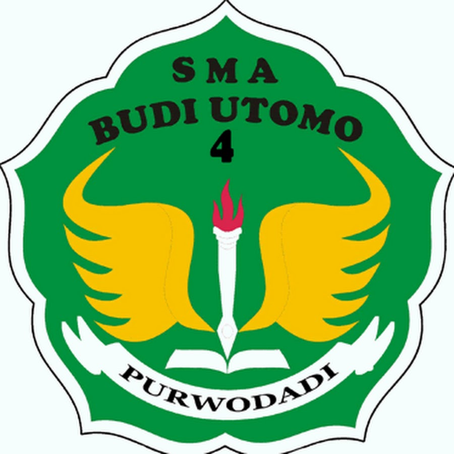

KATA KUNCI DIBLOKIR
Keyword Blocked
PERATURAN LAB KOMPUTER SMA BUDI UTOMO 4 PURWODADI
TENTANG TATA CARA PENGGUNAAN FASILITAS LAB KOMPUTER
MAAF, KATA KUNCI YANG ANDA CARI MASUK DAFTAR KATA KUNCI TERLARANG!
Segala Aktivitas anda direkam dan diawasi oleh ADMIN LAB KOMPUTER
Amal Sholih Gunakan Fasilitas Untuk Keperluan Pembelajaran